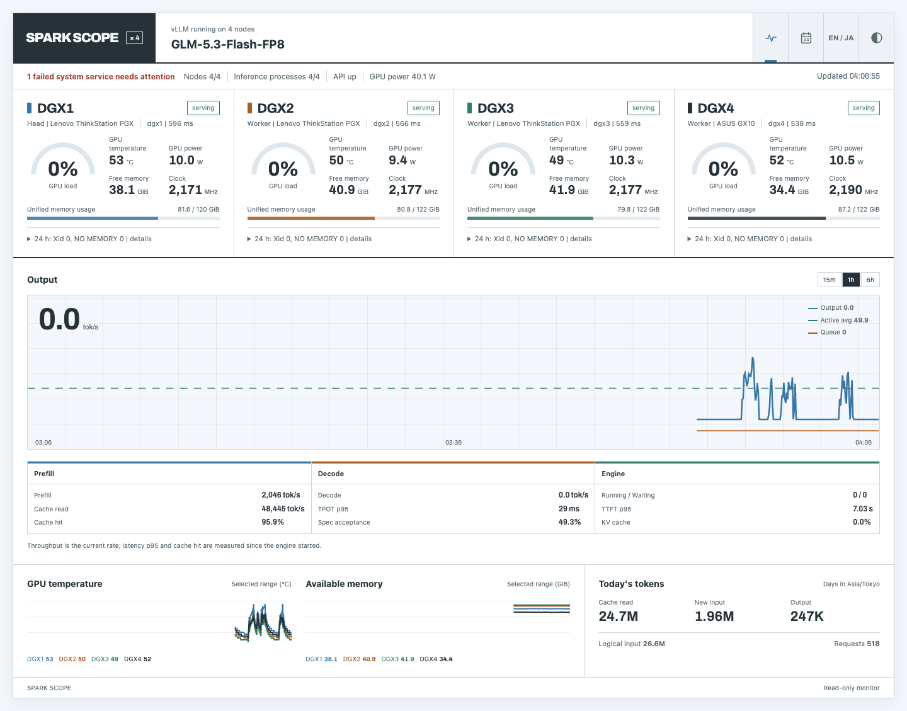
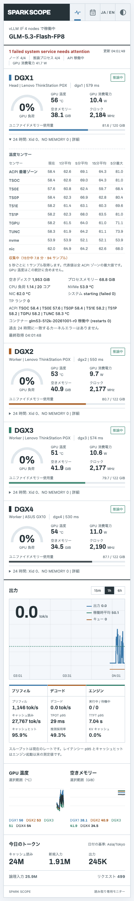
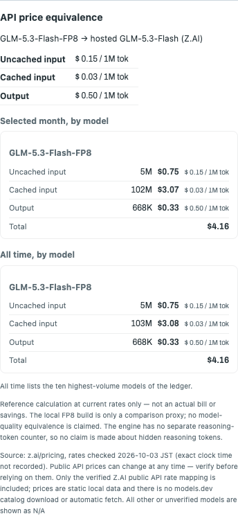
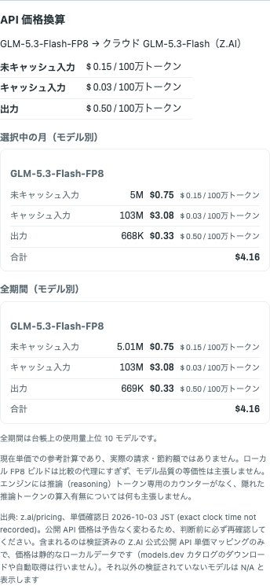

提案書: 日本語UI・センサー別温度履歴・メーカー公式API換算コストの同時表示
Proposal: Japanese-first UI, per-sensor thermal history, and official-API price equivalence — design-review mock
設計レビュー用の静的モック / Static design-review artifact. このページ自体は実ダッシュボードを変更しません / This page does not modify the live dashboard.
注意: このページの温度・トークン数・価格内訳はすべて説明用のサンプル値（モックデータ）です。実測値・実課金ではありません。
Note: All temperatures, token counts, and price breakdowns on this page are illustrative mock data, not live measurements or actual billing.
1. デザイン方針（パレット・書体・レイアウト）
1. Design plan (palette, type, layout)
パレット
Palette
| Token | Hex | Use / 用途 |
|---|---|---|
| --bg | #F4F7FB | ページ背景（柔らかい明色） page background |
| --surface | #FFFFFF | 12px角の面（細い枠線 + 控えめな影） 12px surfaces, subtle outline |
| --ink | #263238 | 本文・見出し body and headings |
| --blue | #3977A8 | リンク・中性温帯・重点枠 links, mid-band temps, emphasis |
| --green | #2E7D67 | 安全温帯・提案パネル safe band, proposed panel |
| --amber | #A95C20 | 高温帯・注記・mock印・N/A hot band, notes, mock badge, N/A |
グラデーション不使用。彩度を抑えた3色帯（緑→青→琥珀）で温度を読ませます。
No gradients. A restrained three-band scale (green → blue → amber) carries temperature.
書体
Typography
- ラテン数字・単位: 既存の
Archivo（tabular-nums を使用。本ページはフォント外部読込なし・ローカルフォールバック表示）。和文: システム日本語UIフォント（Hiragino / Yu Gothic 等）。 - Latin digits and units: existing
Archivowithtabular-nums(this page loads no fonts externally; local fallbacks render it). Japanese: system Japanese UI font stack. - 基準16px、本文0.95rem、行高1.7。全大文字ラベル・目立つ「eyebrow」の反復は使いません。
- 16px base, 0.95rem body, 1.7 line-height. No all-caps labels, no repeated eyebrows.
レイアウト
Layout
- 最大幅62rem、1カラム。操作系（言語切替）はヘッダー右上に1つだけ。セクション間は見出し下罫線で区切り、カードの群生は避ける。
- Single column, 62rem max width. One control (language switch) top of header; sections separated by heading rules, not card grids.
- 面は12px角・1px枠線・影は控えめ（0 1px 2px）。既存の light / system / dark テーマ選好はこの提案でも保持します（本モックはlight背景のみで描画）。
- 12px radius, 1px outline, restrained shadow. The existing light/system/dark theme preference is preserved by the proposal (this mock renders light only).
ジェネリック既定値への批評
Critique of generic defaults
- 汎用SaaSカード並べ: 同形カードの等間隔グリッドは情報の優劣を消します。本提案は「温度ストリップ列」という単一の視覚モーメントに集約し、他は罫線区切りの散文にします。
- Generic SaaS cards: uniform card grids erase hierarchy. This proposal concentrates on one visual moment — a row of per-sensor thermal strips — and uses rule-separated prose elsewhere.
- グラデーション・発光: 温度は既に色の意味を持つため、装飾グラデーションは誤読の源。フラット帯 + 5分最大値の目盛線で十分です。
- Gradients/glow: temperature already encodes meaning through color; decorative gradients invite misreading. Flat bands plus a 5-minute-max tick line suffice.
- 全大文字ラベル・反復eyebrow: 日本語では大文字概念がなく、英語でも視覚ノイズになります。文頭の太い強調のみ。
- All-caps labels / repeated eyebrows: meaningless in Japanese and noise in English; bold sentence-lead emphasis only.
2. Before / After（比較モック）
2. Before / After (comparative mock)
radios / labels 静的比較。実ダッシュボードは変更しません。
Before — 現状（実装前）の Spark Scope サンプル表示 / mock
Before — Spark Scope before this change mock render
| Sensor (kept as-is) | Now |
|---|---|
| ACPI TSOC | 41.5 °C |
| ACPI TS0E | 44.2 °C |
| ACPI TS0P | 43.8 °C |
| ACPI TS1E | 46.5 °C |
| ACPI TS1P | 45.9 °C |
| TGPU | 52.1 °C |
| TUNC | 48.3 °C |
| NVMe | 38.0 °C |
| NIC | 42.7 °C |
- UIは英語のみ（aria / tooltip / エラー / 空欄文言も英語）。テーマ: light / system / dark の選好あり。
- English-only UI (aria, tooltips, errors, blanks included). Theme preference: light/system/dark exists.
- ノード詳細に ACPI / NVMe / NIC センサーの現在値を表示。既存の GPU・メモリ・スループットの各チャートはそのまま残ります。
- Current ACPI / NVMe / NIC sensor readings appear in node details. The existing GPU, memory, and throughput charts remain as-is.
- センサー別の温度履歴・平均・最大値は無し（現在値のみ）。価格換算表示も無し。
- No per-sensor temperature history, average, or max — current readings only. No price equivalence either.
- 既存の DGX Monitor（ポート 8910）は「各取得時に全 thermal_zone センサーの最大値」を 5 秒ごとに 1 サンプルとして保持し、その代表系列だけで 1/5/15 分平均と 5 分最大を出します。センサー別には何も保持しません。
- The existing DGX Monitor (port 8910) keeps ONE representative sample per five-second poll — the maximum over all thermal_zone sensors — and computes the 1/5/15m means and 5m max from that representative series alone. It keeps nothing per sensor.
light system dark — 既存テーマ選好 existing preference
After — 実装した内容（このワーキングツリー） 数値はサンプル / sample values only
After — what was implemented in this working tree sample values only
- 常設の JA/EN 切替を実装（localStorage 保存 + ブラウザ言語の初回検出、テーマ選好とは別キーなので切替で壊れない）。ラベル・aria属性・tooltip・エラー・空欄を両言語化。
- Persistent JA/EN switch implemented (saved in localStorage, first-time browser-language detection; a separate storage key from the theme, so switching never breaks the theme). Labels, aria attributes, tooltips, errors, and blank states localized.
- テーマ切替（light/system/dark）は維持。既定の light テーマを提案の柔らかい明色方向に更新（dark は既存値のまま）。
- Theme toggle (light/system/dark) preserved. The default light theme now follows the proposal's soft-light direction (dark keeps its existing values).
- 既存の 6 時間 volatile 履歴に、5 秒の実収集サンプルごとに「ACPI ゾーン別 + NVMe + NIC」の個別系列と「ゾーン最大値」の代表系列を記録（永続化なし・新コレクタなし・既存 5 秒 SSH 取得を再利用）。
- The existing 6h volatile history now records, per actual five-second collected sample, individual series for each ACPI zone plus NVMe and NIC, and the max-over-zones representative series (no persistence, no new collector — the existing five-second SSH collection is reused).
- 代表系列には 8910 と同じ正規統計（包括 1/5/15 分の算術平均・小数1桁、5 分最大）をサーバー側の全解像度履歴から計算し /api/state で公開。ダウンサンプル後の値は統計に使わない。
- The representative series gets the canonical 8910 statistics (inclusive 1/5/15m arithmetic means to one decimal, 5m max), computed server-side from the full-resolution history and exposed in /api/state. Downsampled values are never used for the statistics.
- UIは各センサーの現在値 + 1/5/15 分平均 + 5 分最大を表示。ウォームアップ中はサンプル数を、サンプル無しは「no sample / サンプルなし」を示す（ゼロとは表示しない）。代表統計は全 ACPI 温度ゾーン（TGPU の ACPI ゾーンがあればそれも含む）の最大値で、別系統の nvidia-smi GPU 温度および NVMe・NIC の個別センサー値は代表統計に含めない。
- The UI shows each sensor's current value + 1/5/15m means + 5m max; while history fills it shows the sample count, and with no samples it reads "no sample" — never a zero. The representative statistic is the maximum across all ACPI thermal zones (including the ACPI TGPU zone when present); the separate nvidia-smi GPU temperature and the separate NVMe/NIC sensor readings are not part of it.
センサー別サーマルストリップ（本提案の中心モーメント）
Per-sensor thermal strips (the proposal's central moment)
5m max 43.2 °C
5m max 46.0 °C
47.5 °C
49.1 °C
48.4 °C
61.8 °C
51.2 °C
39.5 °C
45.0 °C
~45 °C未満 / below 45–55 55以上 / and above — 縦線=直近5分の最大値 vertical mark = rolling 5-minute max サンプル値 / mock values
取得漏れのサンプルは線を欠落させます（例: TS1E の 12:04–12:05 は空白）。再起動直後は「収集・ウォームアップ中（最大5分）」と表示。
Missing samples render as line gaps (e.g., TS1E 12:04–12:05 blank). Right after restart the UI states "collecting / warming up (up to 5 minutes)".
履歴チャート（任意・既存ウィンドウ準拠）
History chart (optional, existing windows)
- 既存 Spark Scope の 15m / 1h / 6h ウィンドウ設定にそのまま従います。
- Follows the existing Spark Scope 15m / 1h / 6h window options.
3. 採用した契約: 実際の 8910 の温度セマンティクス
3. Adopted contract: the actual 8910 thermal semantics
確認済み: 現在の gb10-monitor（ポート 8910, server.js）では、5 秒ごとのホスト取得でオンラインかつ温度が取れたときに全 thermal_zone センサーの最大値（TGPU の ACPI ゾーンが存在すればそれも含む）を 1 サンプルとして追加し、その最大値ごとの時系列だけを使って、包括的な直近 1/5/15 分の算術平均（小数1桁丸め）と 5 分最大（小数1桁）を出します。欠落・オフラインはサンプルを作らず、履歴は RAM のみ・15 分保持です。実装はこの契約を代表系列にそのまま適用し、さらにゾーン別・NVMe・NIC の個別系列を同じ 6 時間 volatile 履歴に追加しました。別系統の nvidia-smi GPU 温度、および NVMe・NIC の個別センサー値は代表統計に含みません。
Verified: in the current gb10-monitor (port 8910, server.js), every five-second host poll that is online and has a reading adds ONE representative sample — the maximum over all thermal_zone sensors (including the ACPI TGPU zone when present) — and uses that same max-per-sample time series for the inclusive last-1m/5m/15m arithmetic means (one decimal) and the 5m maximum (one decimal). Missing or offline produces no sample; history is RAM-only, 15m retained. The implementation applies this contract verbatim to the representative series and additionally records per-zone, NVMe and NIC series in the same 6h volatile history. The separate nvidia-smi GPU temperature and the separate NVMe/NIC sensor readings are not part of the representative statistics.
4. コスト: メーカー公式API換算・現在単価 / Official API equivalent at current rates
4. Cost: メーカー公式API換算・現在単価 / Official API equivalent at current rates
実装した単価（公式・2026-10-03確認・静的ローカル）
Implemented rates (official, checked 2026-10-03, static local)
| Component / 構成要素 | Rate / 単価 |
|---|---|
| 未キャッシュ入力 uncached input | $0.15 / 1M tok |
| キャッシュ入力 cached input | $0.03 / 1M tok |
| 出力 output | $0.50 / 1M tok |
ローカルの GLM-5.3-Flash-FP8 のみを Z.AI GLM-5.3-Flash に明示対応付け。未知モデル・未検証単価・ゼロ価格・未報告カウンターはN/A（無料ではない）。必要な構成要素が揃わない場合、出力だけでの推定はしない（合計も N/A）。表示は USD・確認日付き。
Only local GLM-5.3-Flash-FP8 is explicitly mapped to Z.AI GLM-5.3-Flash. Unknown models, unverified or zero prices, and unreported counters read as N/A (not free). When a required component is unavailable, output is never estimated alone — the total is N/A too. USD only, with the checked date shown.
内訳サンプル（1M + 1M 出力）
Sample breakdown (1M + 1M output)
| Component | Tokens mock | Cost |
|---|---|---|
| Uncached input | 1,000,000 | $0.15 |
| Cached input | 0 | $0.00 |
| Output | 1,000,000 | $0.50 |
| Total | 2,000,000 | $0.65 |
式: （未キャッシュ入力 × $0.15 + キャッシュ入力 × $0.03 + 出力 × $0.50）÷ 1,000,000 = USD。上記の確認済み引用単価を使用。各成分を一度だけ計上（二重計上なし）。未知モデル・未知成分は N/A。
Formula: (uncached_input × $0.15 + cached_input × $0.03 + output × $0.50) / 1,000,000 = USD, using the cited checked rates above. Each component counted once (never double counted). Unknown models / unknown components are N/A.
明示的な制限: ローカル台帳はエンジン生成トークンカウンタを記録しますが、推論（reasoning）トークン専用のカウンタは持っていません。隠れた推論トークンの価格への実際の算入有無・等価性はまだ独立に検証されていません。したがって金額は目安的な参考値として扱い、請求書と正確に一致するものとみなさないでください。推論トークンが除外されている、または含まれているとは主張しません。
Explicit limitation: the local ledger records the engine generation token counter and has no separate reasoning-token counter. Exact inclusion of, and price equivalence for, hidden reasoning tokens has not yet been independently verified. Treat the amount as an indicative reference, not exact invoice equivalence. No claim is made that reasoning is excluded or included.
- 実装:
UsageStore.month()にスキーマ変更なしでモデル別グループ合計を追加。全期間は既存の上位 10 モデル（usage.models）を使用し、UI にその制限を明記。ベースライン／再起動／タイムゾーンの既存セマンティクスはそのまま。 - Implemented:
UsageStore.month()now includes per-model group totals without a schema change. All time uses the existing top-10 per-model list (usage.models) with the limitation stated in the UI. Baseline/restart/time-zone semantics are untouched. - 価格表示は台帳の実際に報告されたカウンターのみを使い、未報告カウンターをゼロとして価格計算しない。推論（reasoning）トークン専用カウンターは無いため、算入有無について何も主張しない。
- The price view prices only the ledger's actually reported counters and never treats an unreported counter as zero. There is no separate reasoning-token counter, so nothing is claimed about its inclusion.
- 生トークンは端末外に出しません。価格メタデータはローカル静的のみ（自動取得なし）。実際の請求・節約・品質の等価性は主張しない。
- No raw tokens leave the host; the rate metadata is static and local (nothing fetched). No actual bill, savings, or model-quality equivalence is claimed.
欠落価格モデルの扱い
Missing-priced model
| Model mock row | Equivalent cost |
|---|---|
| GLM-5.3-Flash-FP8 | $0.65 （上記サンプル換算）(sample above) |
| unpriced-model-x | N/A |
出典・鮮度メタデータ
Sources & freshness metadata
- Z.AI Pricing — z.ai/pricing（本文参照・このページからはリンクしません / cited as text, not linked from this page)
- models.dev — github.com/anomalyco/models.dev（カタログ候補・任意 / optional candidate catalog)
- 価格確認: 2026-10-03 JST。プロバイダ: Z.AI。UIには「価格が古い可能性がある」警告を常に表示します。
- Prices reviewed 2026-10-03 from the provider's official public rate sheet. Provider: Z.AI. The UI always shows a may-be-stale caveat.
5. 実装したファイル一覧（このワーキングツリー）
5. Files implemented in this working tree
spark-scope/lib/history.mjs— 5 秒ノードサンプルごとの代表（ゾーン最大）+ センサー別系列のダウンサンプル、正規統計（1/5/15 分包括平均・5 分最大・サンプル数） downsampling of the representative max-over-zones series and per-sensor series of the five-second node samples; canonical stats (inclusive 1/5/15m means, 5m max, sample count)spark-scope/server.mjs— 履歴点へ thermal/sensors を追加、/api/state に正規統計を公開（既存の 5 秒 SSH 取収集と 2 秒 API 取得はそのまま） thermal/sensors fields added to history points; canonical stats exposed in /api/state (the existing 5s SSH collection and 2s API poll are unchanged)spark-scope/lib/usage-store.mjs— month() にモデル別グループ合計を追加（スキーマ変更なし） month() gains per-model group totals (no schema change)spark-scope/public/view-data.js— 静的な価格メタデータと換算計算（N/A 規則・二重計上なし・URL は同梱しない） static price metadata and the equivalence calculation (N/A rules, no double counting, no remote URL shipped)spark-scope/public/i18n.js— EN/JA 辞書、初回はブラウザ言語検出、保存は localStorage（テーマと別キー） EN/JA dictionary, first-visit browser-language detection, preference saved in localStorage (separate key from the theme)spark-scope/public/app.js/index.html/styles.css— 言語切替 UI、温度センサー行、価格パネル、柔らかい明色テーマ（dark は維持） language switch UI, per-sensor thermal rows, the price panel, and the soft light theme (dark preserved)
本ページは提案・比較用の静的モックです。実ダッシュボードの値はここに表示されず、このページの数値はすべてサンプルです。
This page remains a static proposal/comparison mock. No live dashboard values appear here; every number on this page is a sample.
6. ワイヤーフレーム
6. Wireframe
7. 実機検証（要約）
7. Live verification (summary)
リンク（Tailnet 専用・外部公開なし）:
Links (Tailnet-only, not publicly exposed):
- ダッシュボード / Dashboard: /
- 提案ページ / Proposal page: /proposal-ja-en-price-thermal.html
スクリーンショット: 以下の 2 枚のみ（review/dashboard-en.png・review/dashboard-mobile-ja.png）。トークン台帳のキャプチャは実使用量合計が写るため公開しません。取得時刻はファイル一覧からの概算（タイムゾーン未特定）のため概略の実機キャプチャとして扱ってください。ダッシュボード画像のみ public/review へコピーして埋め込んでおり、トークン台帳の画像はコピーしていません。
Screenshots: the two figures below only (review/dashboard-en.png and review/dashboard-mobile-ja.png; ledger captures show production usage totals and are not exposed). Capture times are approximate from the file listing (timezone unspecified), so treat them as approximate live captures. Only the dashboard images were copied into public/review and embedded here; the token-ledger images were not copied.


モバイル 390px の修正後再確認: 修正後に再計測しました — document/body の scrollWidth は 390px、価格表は 447px で横スクローラー内に収まります。上記のスクリーンショットはいずれも修正後に再取得した現行の画像です。
Mobile 390px rechecked after fix: re-measured after the fix — document/body scrollWidth is 390px and the 447px-wide price table stays inside its horizontal scroller. Both screenshots above are current captures retaken after the fix.
Playwright 検証（合格）: JA/EN 切替・言語選好の保存・system/light/dark テーマ・tooltip・オフライン時のエラー表示・温度の no-sample・空月台帳。ページエラー・外部リクエストなし。実機 API は 200、推論ノード 4 基すべて true。状態は「degraded」— 既存の失敗サービス 1 つによるもので、今回の変更とは無関係。温度履歴は volatile で、再起動後はウォームアップ（再収集）から始まります。
Playwright checks (passing): JA/EN switch, language preference persistence, system/light/dark themes, tooltips, offline error display, thermal no-sample state, and the empty-month ledger. No page errors or external requests. Live API returned 200 with all 4 inference nodes true; status shows degraded from one preexisting failed service, unrelated to this change. Thermal history is volatile and warms up (recollection) after a restart.
既知の限界: Playwright と実機ブラウザはサンプル取得タイミングが独立しており、同一時点の値を比較できません。価格マッピングは静的なローカルデータ（z.ai/pricing 参照）で、確認日・時刻は本ページに記録がなく、models.dev の取得は行っていません。推論（reasoning）トークンの算入有無は不明のまま主張しません。台帳のベースラインはそれ以前の使用量を含まず、価格は参考値であり請求書ではありません。
Known limits: Playwright and the live browser sample independently, so values are not comparable at the same instant. The price mapping is static local data (cited from z.ai/pricing); the exact check date/time is not recorded here and no models.dev fetch is made. Reasoning-token inclusion remains unknown and is not claimed. The ledger baseline excludes pre-ledger usage, and prices are indicative references, not invoices.
8. ユーザー指摘の修正: 価格パネルのモバイル表示（2秒毎の全再構築を廃止）
8. User-requested correction: mobile rendering of the price panel (the every-2s full rebuild is gone)
ご指摘（修正前）: 旧実装では2秒ごとのポーリングで価格表全体を毎回再構築（innerHTML 再構築）していたため、横スクローラーの位置が毎回先頭に戻り、モデル名を横へ読む操作が繰り返し失敗していました。
The user's report (before): the old implementation rebuilt the whole price table (innerHTML rebuild) on every two-second poll, so the horizontal scroller reset to the start each time and reading model names sideways kept failing.
修正後: 各モデルは縦組みの定義カード（1モデル1カード・1カードに4行: 未キャッシュ入力・キャッシュ入力・出力・合計）として表示します。カードにはトークン数と対応する米ドル換算コスト、レート（100万トークンあたり）を示し、月別（選択月）と全期間の両方のセクションがあります。出典（z.ai/pricing、確認日）と「価格が古い可能性がある」注意書きは従来どおり読める位置に残ります。カードはモデル名でキー管理され、ポーリング間で再利用され、変更されたテキストだけをその場で差し替えるため、横スクローラーは存在しません（縦スクロールだけで読めます）。カードは2秒経っても動かないため、読んでいる位置とフォーカスは維持されます。
After: each model is now a vertical definition card (one card per model, four lines per card: uncached input, cached input, output, total). Cards show token counts, the equivalent USD cost, and the rate (per 1M tokens), in both the selected-month and all-time sections. The source (z.ai/pricing with its checked date) and the may-be-stale caution remain readable where they were. Cards are keyed by model name, reused across polls, and only changed text is patched in place — there is no horizontal scroller (everything reads by vertical scroll alone). Because cards do not move on the two-second tick, the reader's position and focus are preserved.
自動更新は継続: 年間を通じたアプリ側の自動更新（2秒ポーリング）は無効化していません。データは2秒ごとに更新され続けますが、カードはキー管理でその場で差し替えられるため画面は揺れません。
Auto-refresh stays on: the app's automatic refresh (two-second polling) was not disabled. Data keeps updating every two seconds; only the patching is now in place per keyed card, so the page does not jump.
デスクトップ表示の調整: 1440px 幅の実機確認でカードが横へ約1348pxまで伸び、ラベルと数値が離れすぎるという指摘を受けました。カードグリッドの最大幅を920pxに制限し、カード最小幅を約360pxにしたため、デスクトップでは1枚あたり約450pxの読みやすい幅になり、モバイル（320/390px）では従来どおり全幅1枚で表示されます。価格・ロジックの変更はありません。
Desktop adjustment: a 1440px-wide live check showed a single card stretching to about 1348px, pushing labels and values too far apart. The card grid is now capped at 920px with a minimum card width of about 360px, so desktop cards land around 450px wide and readable, while mobile (320/390px) still shows one full-width card as before. Prices and logic are unchanged.
検証の証拠（今回の計測事実のみ）: npm test は 139/139 合格しました。稼働中の Tailnet 専用 :8914 アプリを再確認した結果、320/390/430px の電話幅（JA・EN）で document/body の幅はビューポートと一致し横あふれはありませんでした。1024/1440px のデスクトップでは各グリッドに 455px 幅のカードが2枚表示されました。390x640 では出典注記が縦スクロールで到達可能（JA で scrollY 1380）で、6.5秒の自動ポーリング後もスクロール位置は 1380 のまま、フォーカス中の言語切替はフォーカスを保持し、同じカードの DOM ノードが残り、updated-at は進んでいました。これらの確認はすべて、app.js と styles.css の SHA-256 がローカルソースと一致し、アセットが Cache-Control: no-cache を返す、現在配信中の :8914 アプリに対して行いました。これ以外のテストや実機スクリーンショットについては主張しません。
Evidence (only the facts measured this time): npm test passed 139/139. A recheck of the running Tailnet-only :8914 app at 320/390/430 phone widths in JA and EN showed document/body width equal to the viewport with no horizontal overflow. At 1024/1440 desktop widths each grid showed two cards, 455px each. At 390x640 the source note was reachable by vertical scrolling (scrollY 1380 in JA), and after 6.5 seconds of automatic polling the scroll position stayed 1380, the focused language-toggle stayed focused, the same card DOM node remained, and updated-at advanced. All checks were against the currently served :8914 app, whose app.js and styles.css SHA-256 matched the local source and whose assets return Cache-Control: no-cache. No tests or live screenshots beyond these facts are claimed.
下のスクリーンショットについて: 以下の2枚は稼働中の :8914 価格パネルの実機キャプチャ（2026-10-03 04:51 頃のシステムローカル時刻、概算・タイムゾーン未記録）で、ローカル台帳から派生した実使用量の件数と推定ドル合計が写っています。配信は既存の Tailnet 専用 :8914 提案ページ経由のみ（外部公開なし）。モックやマスキング画像ではありません。
About the screenshots below: the two figures are live captures of the running :8914 price panel (around Oct 3 2026 04:51 system-local time, approximate; timezone not recorded) and contain live ledger-derived per-model counts and estimated dollar totals. They are served only by the existing Tailnet-only :8914 proposal page (not publicly exposed). They are not mock or scrubbed images.

